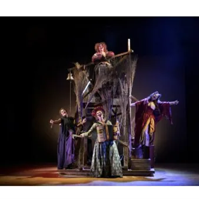

mer 9 dic · dalle 20:30
Strighe maledette!
9 dicembre 2026 ore 20.30 Teatro Luigi Bon È il 1518, ad Edolo, in Valle Camonica, quando una tremenda siccità, unita ad un morbo che uccide uomini e animali, getta il paese nel caos più totale. I villani sono esausti, le strighe hanno colpito di nuovo! Stanche di fòter e balar…
 Indicazioni
Indicazioni
- Costi e prenotazioni
- Costo non indicato · Prenotazione non indicata
- Programma
- Programma da verificare. Apri la fonte ufficiale per orari e possibili aggiornamenti.
- In caso di maltempo
- Nessuna indicazione specifica pubblicata.
- Note
- Acquisito automaticamente dalla fonte.
L’EVENTO
Descrizione completa
È il 1518, ad Edolo, in Valle Camonica, quando una tremenda siccità, unita ad un morbo che uccide uomini e animali, getta il paese nel caos più totale. I villani sono esausti, le strighe hanno colpito di nuovo! Stanche di fòter e balar con Belzebù nei prati del monte Tonale, sono ridiscese a valle per spargere le loro polveri mefitiche su uomini e greggi. Quattro donne vengono ritenute colpevoli di tali delitti e, inseguite dal popolo inferocito, trovano rifugio nella chiesa di San Giovanni il Battista. Le quattro donne: una guaritrice, una prostituta, una nobildonna e una contadina, vengono a lungo interrogate dall’inquisitore, ma nessuna confessa. Eppure tra di loro si nasconde almeno una strega! Una notte di tempo per decidere chi delle quattro dovrà sacrificarsi per le altre.
Una notte di tempo per trovare un capro espiatorio.
Una notte di tempo per decidere chi, tra le quattro sfortunate, dovrà venire arsa viva nella pubblica piazza. Lo spettacolo vuole raccontare, attraverso il puntello della comicità, alcune novelle, leggende e racconti folklorici, che hanno come protagoniste le donne. Fate attenzione, non si tratta di donne angelicate o assunte ad oggetto di desiderio, bensì di maleficae, adescatrici, herbarie e meretrici. A fare da sfondo la più tremenda caccia alle streghe mai capitata ai confini della Repubblica di San Marco: i roghi della Valle Camonica. Soggetto originale e regia di Marco Zoppello
Con Sara Allevi, Anna De Franceschi, Eleonora Marchiori e Maria Luisa Zaltron
Produzione Stivalaccio Teatro in co-produzione con Operaestate Festival Veneto Prezzo Intero – 18 €
Ridotto – 15 €
Residenti – 12 € I biglietti saranno disponibili dal 2 novembre. I biglietti possono essere acquistati su Vivaticket.com o in biglietteria Informazioni: biglietteria@fondazionebon.com o 0432 543049
IL PROGRAMMA
Programma e orari
Appuntamenti raccolti dalle fonti elencate. Dove manca un orario, non è ancora disponibile in questa scheda.
Programma pubblicato
- Dal 2026-12-09 al 2026-12-09
INFORMAZIONI UTILI
Prima di partire
- Controllare la fonte prima di partire.
ORGANIZZAZIONE